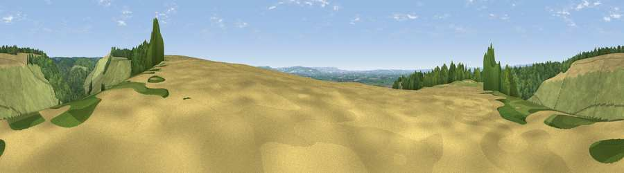

Viewpoint near Thornton-le-Dale
#22656 in England · top 46% of its area beats it · near Thornton-le-Dale · path 138 mWhere it is
The exact computed spot (SE 84775 83925). Click the marker for map links.
Public access: the nearest public right of way is about 138 m away — the final stretch may cross private land. Computed from Natural England's CRoW access layer and OpenStreetMap rights of way — not the legal definitive map. Always verify locally.
The view, rendered

A 360° render of this exact spot computed from the terrain model, tree cover and land cover — summer colours, afternoon light, calibrated against photographs of famous viewpoints. Real trees, hedges and buildings will differ in detail.
The panorama
Grey silhouette: terrain skyline in each direction (720 bearings, Earth curvature and refraction included). Dashed green: skyline with trees (+15 m) and buildings (+8 m) as obstacles. Blue strip: how far the ground is visible on each bearing.
Where the view opens
Wedge length = distance to the farthest visible ground on that bearing (vegetation-aware). Rings at 10, 25 and 50 km.
What fills the view
63% grassland · 19% woodland · 17% cropland ·
Angular shares of the visible panorama (visual magnitude), not map area. Landscape diversity 0.42 (0–1 Shannon).
Key numbers
More beautiful places nearby
The staircase of upgrades: each row has a higher view potential than everything closer. Driving times are estimates from straight-line distance, calibrated against real road routing — check an actual route before setting out.
| Place | Direction | Drive | Score |
|---|---|---|---|
| Viewpoint near Thornton-le-Dale | WSW · 1 km | ~2 min | 54.8 |
| Viewpoint near Thornton-le-Dale | N · 1 km | ~3 min | 60.4 |
| Viewpoint near Allerston | ENE · 1 km | ~4 min | 61.7 |
| Whinny Nab | N · 11 km | ~21 min | 64.9 |
| Viewpoint near Scagglethorpe | S · 11 km | ~22 min | 70.2 |
| Viewpoint near West Heslerton | SE · 11 km | ~22 min | 70.5 |
| Viewpoint near Settrington | S · 13 km | ~23 min | 72.3 |
| Viewpoint near Scalby | ENE · 16 km | ~28 min | 73.4 |
54.24401, -0.70059 · source: screening · position refined by local search. Computed location — check access rights before visiting.